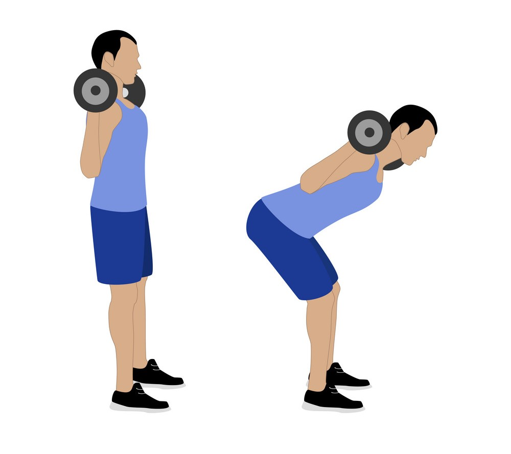

Exercise Description
Stand with your feet shoulder-width apart and a barbell placed across your upper back. Keep your back straight and bend forward at the hips, lowering your torso until it's nearly parallel to the floor. Return to the starting position by driving your hips forward.
Reps and Sets
Beginners: 3 sets of 15-20 reps
Weights: 10kg barbell
Rest time between each set: 45secs
Video Implementation